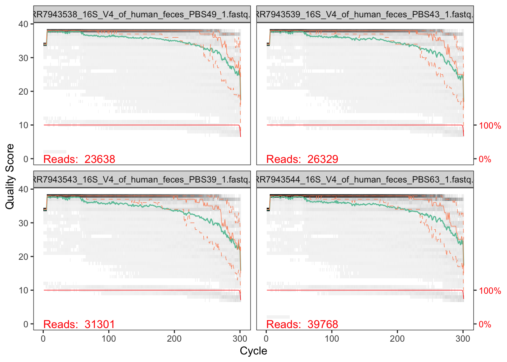
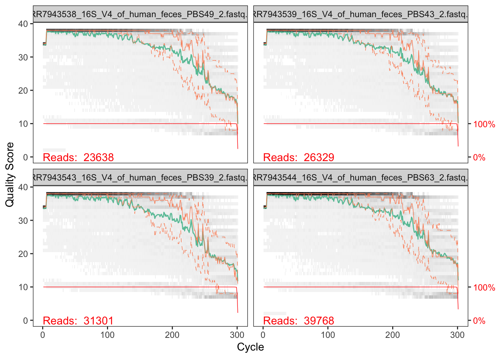
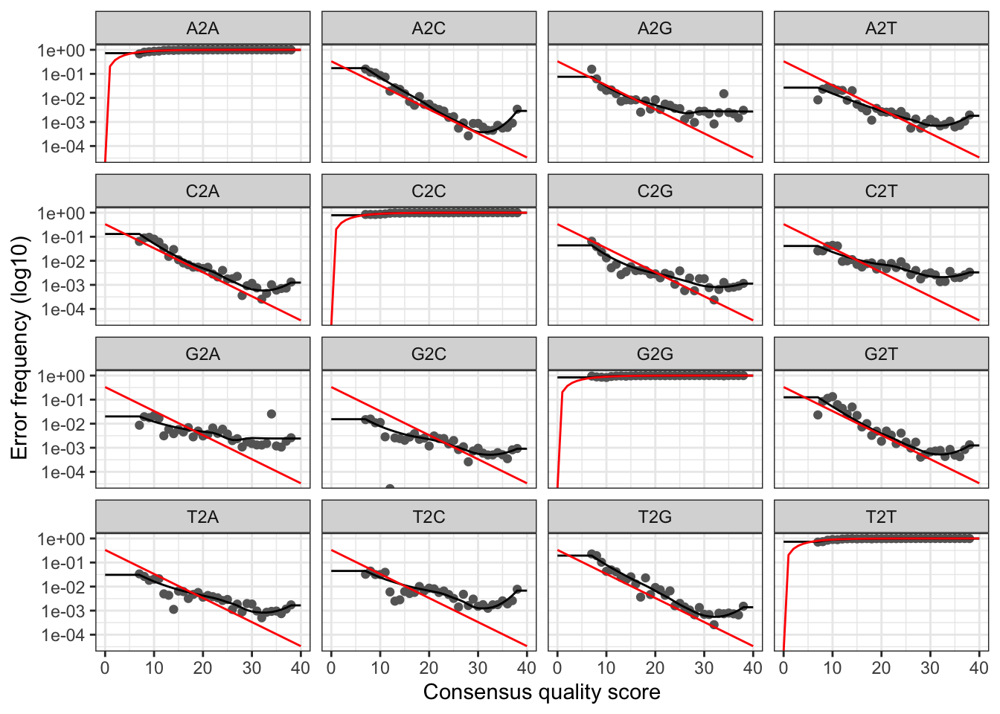
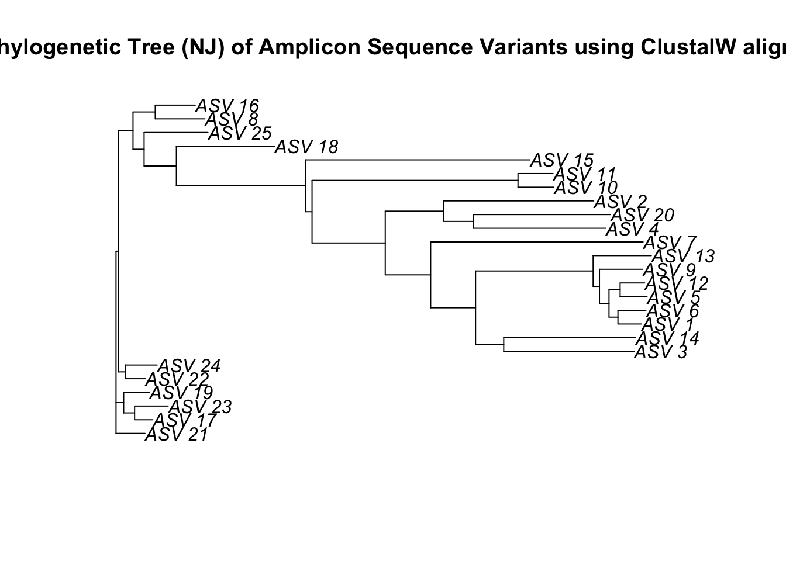
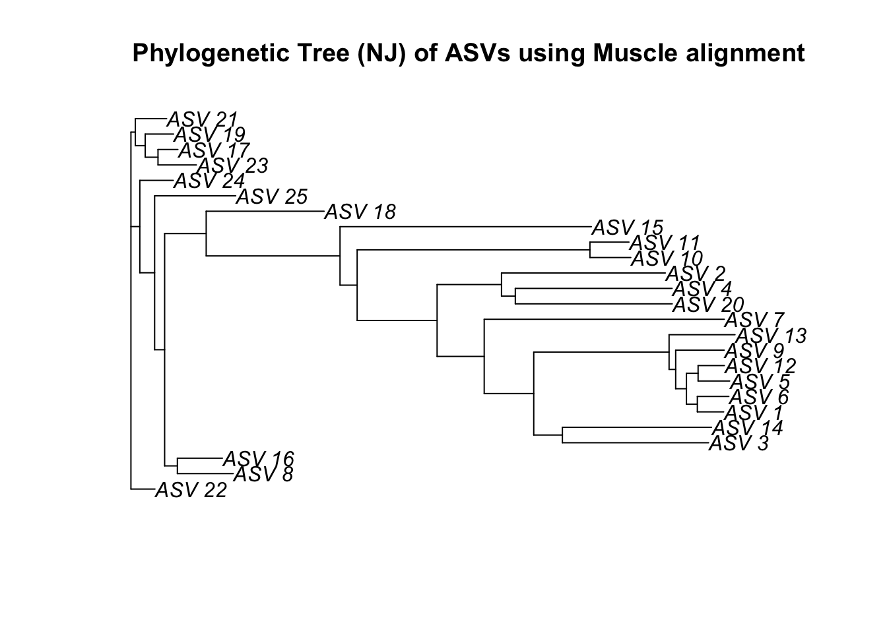
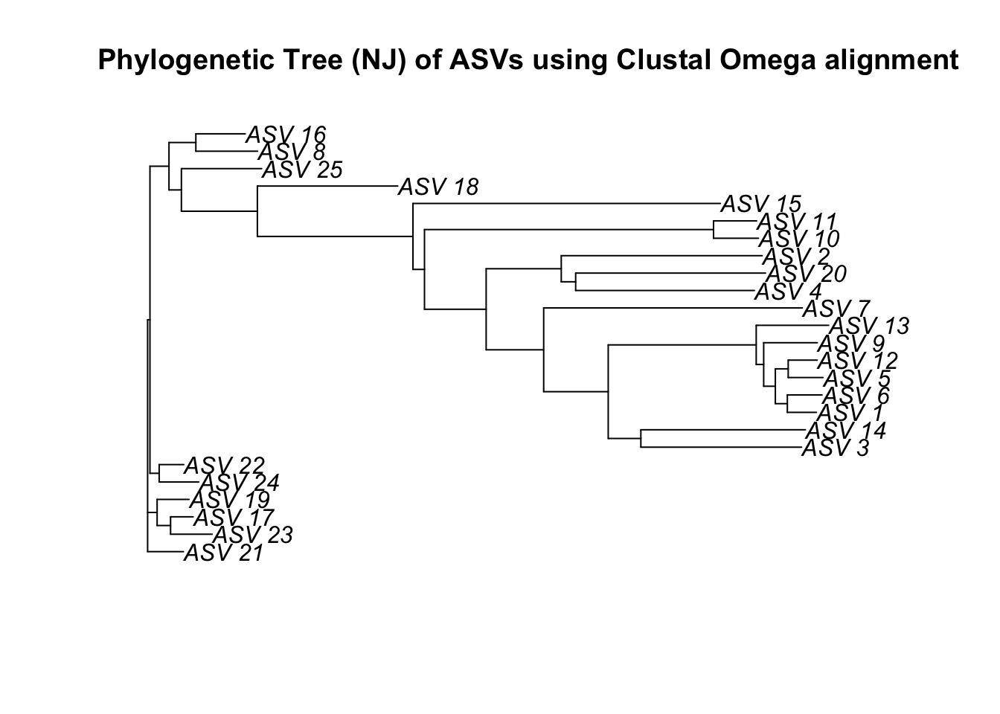

Sequence processing in R
Links
- Welcome to a Little Book of R for Bioinformatics!
- Computational Genomics with R
- sthda genomics wiki
- bioconductor - R and Bioconductor for Genomic Analysis -bioconductor - Introduction to R and Bioconductor
- Biomedical Data Science
Libraries
Install packages - do this as we are talking, it might take a while
if (!requireNamespace("BiocManager", quietly = TRUE))
install.packages("BiocManager")
BiocManager::install("dada2")
if (!requireNamespace("BiocManager", quietly=TRUE))
install.packages("BiocManager")
BiocManager::install("msa")
if (!require("BiocManager", quietly = TRUE))
install.packages("BiocManager")
BiocManager::install("Biostrings")
install.packages("ape")
install.packages("seqinr")Load libraries
## load dada2 package
library(dada2); packageVersion("dada2")## Loading required package: Rcpp## load seqinr package
library(seqinr)
## load msa package
library(msa)## Loading required package: Biostrings## Loading required package: BiocGenerics##
## Attaching package: 'BiocGenerics'## The following objects are masked from 'package:stats':
##
## IQR, mad, sd, var, xtabs## The following objects are masked from 'package:base':
##
## anyDuplicated, append, as.data.frame, basename, cbind, colnames,
## dirname, do.call, duplicated, eval, evalq, Filter, Find, get, grep,
## grepl, intersect, is.unsorted, lapply, Map, mapply, match, mget,
## order, paste, pmax, pmax.int, pmin, pmin.int, Position, rank,
## rbind, Reduce, rownames, sapply, setdiff, sort, table, tapply,
## union, unique, unsplit, which.max, which.min## Loading required package: S4Vectors## Loading required package: stats4##
## Attaching package: 'S4Vectors'## The following objects are masked from 'package:base':
##
## expand.grid, I, unname## Loading required package: IRanges## Loading required package: XVector## Loading required package: GenomeInfoDb##
## Attaching package: 'Biostrings'## The following object is masked from 'package:seqinr':
##
## translate## The following object is masked from 'package:base':
##
## strsplit## load Biostrings package
library(Biostrings)
# load ape package
library(ape)##
## Attaching package: 'ape'## The following object is masked from 'package:Biostrings':
##
## complement## The following objects are masked from 'package:seqinr':
##
## as.alignment, consensuslibrary(tidyverse)## ── Attaching packages ─────────────────────────────────────── tidyverse 1.3.1 ──## ✓ ggplot2 3.3.5 ✓ purrr 0.3.4
## ✓ tibble 3.1.6 ✓ dplyr 1.0.8
## ✓ tidyr 1.2.0 ✓ stringr 1.4.0
## ✓ readr 2.1.2 ✓ forcats 0.5.1## ── Conflicts ────────────────────────────────────────── tidyverse_conflicts() ──
## x ggplot2::%+%() masks crayon::%+%()
## x dplyr::collapse() masks Biostrings::collapse(), IRanges::collapse()
## x dplyr::combine() masks BiocGenerics::combine()
## x purrr::compact() masks XVector::compact()
## x dplyr::count() masks seqinr::count()
## x dplyr::desc() masks IRanges::desc()
## x tidyr::expand() masks S4Vectors::expand()
## x dplyr::filter() masks stats::filter()
## x dplyr::first() masks S4Vectors::first()
## x dplyr::lag() masks stats::lag()
## x ggplot2::Position() masks BiocGenerics::Position(), base::Position()
## x purrr::reduce() masks IRanges::reduce()
## x dplyr::rename() masks S4Vectors::rename()
## x dplyr::slice() masks XVector::slice(), IRanges::slice()Overview with Illumina reads
For this first part we will be performing a number of steps on some paired-end illumina sequence data.
Obtaining data
For these next steps we will follow analysis using the dada2 pipeline.
Seeing as Illumina MiSeq is currently the most widely used platform we will first explore some pre-processing steps with data obtained from.
For today’s example we will just select a subset of samples from this project to look into.
If you are following along within the BIO513 google RStudio cloud the data is available for you in the directory data/.
Unzip files using the command gunzip
gunzip data/ngs/illumina/*.fastq.gzSet path to where the fastq files are
# Path to raw data
path <- "data/ngs/illumina"
list.files(path)## [1] "filtered"
## [2] "output"
## [3] "SRR7943538_16S_V4_of_human_feces_PBS49_1.fastq.gz"
## [4] "SRR7943538_16S_V4_of_human_feces_PBS49_2.fastq.gz"
## [5] "SRR7943539_16S_V4_of_human_feces_PBS43_1.fastq.gz"
## [6] "SRR7943539_16S_V4_of_human_feces_PBS43_2.fastq.gz"
## [7] "SRR7943543_16S_V4_of_human_feces_PBS39_1.fastq.gz"
## [8] "SRR7943543_16S_V4_of_human_feces_PBS39_2.fastq.gz"
## [9] "SRR7943544_16S_V4_of_human_feces_PBS63_1.fastq.gz"
## [10] "SRR7943544_16S_V4_of_human_feces_PBS63_2.fastq.gz"Set forward and reverse file naming conventions
# In this example forward and reverse fastq are denoted by either *1.fastq or *2.fastq.
fnFs <- sort(list.files(path, pattern="_1.fastq", full.names = TRUE))
fnRs <- sort(list.files(path, pattern="_2.fastq", full.names = TRUE))
# Extract sample names
sample.names <- sapply(strsplit(basename(fnFs), "_"), `[`, 7)
# check files names are correct
sample.names## [1] "PBS49" "PBS43" "PBS39" "PBS63"Primers:
- 28F-YM (forward primer): TCGTCGGCAGCGTCAGATGTGTATAAGAGACAGGAGTTTGATYMTGGCTCAG
- 28F-Borrellia (forward primer) : TCGTCGGCAGCGTCAGATGTGTATAAGAGACAGGAGTTTGATCCTGGCTTAG
- 28FChloroflex (forward primer): TCGTCGGCAGCGTCAGATGTGTATAAGAGACAGGAATTTGATCTTGGTTCAG
- 28F-Bifdo (forward primer): TCGTCGGCAGCGTCAGATGTGTATAAGAGACAGGGGTTCGATTCTGGCTCAG
- 388R (reverse primer): GTCTCGTGGGCTCGGAGATGTGTATAAGAGACAGTGCTGCCTCCCGTAGGAGT
Inspect read quality profiles
We start by visualizing the quality profiles of the forward reads:
plotQualityProfile(fnFs[1:4])## Warning: `guides(<scale> = FALSE)` is deprecated. Please use `guides(<scale> =
## "none")` instead.
plotQualityProfile(fnRs[1:4])## Warning: `guides(<scale> = FALSE)` is deprecated. Please use `guides(<scale> =
## "none")` instead.
In gray-scale is a heat map of the frequency of each quality score at each base position. The mean quality score at each position is shown by the green line, and the quartiles of the quality score distribution by the orange lines. The red line shows the scaled proportion of reads that extend to at least that position (this is more useful for other sequencing technologies, as Illumina reads are typically all the same length, hence the flat red line).
The forward reads are good quality. We can see that for the reverse reads quality drops off much more significantly, especially at the end - which is common in Illumina sequencing. This isn’t too worrisome, as DADA2 incorporates quality information into its error model which makes the algorithm robust to lower quality sequence, but trimming as the average qualities crash will improve the algorithm’s sensitivity to rare sequence variants.
Considerations for your own data: How much do your reads overlap? Some assays rely on complete overlap and therefore use read quality for filtering. But you need to consider how much your reads overlap for this step. Your
truncLenmust be large enough to maintain20 + biological.length.variationnucleotides of overlap between them.
Filter and trim
Assign the filenames for the filtered fastq.gz files.
Place filtered files in filtered/ subdirectory
filtFs <- file.path(path, "filtered", paste0(sample.names, "_F_filt.fastq.gz"))
filtRs <- file.path(path, "filtered", paste0(sample.names, "_R_filt.fastq.gz"))
names(filtFs) <- sample.names
names(filtRs) <- sample.namesWe’ll use standard filtering parameters: maxN=0 (DADA2 requires no Ns), truncQ=2, rm.phix=TRUE and maxEE=2. The maxEE parameter sets the maximum number of “expected errors” allowed in a read, which is a better filter than simply averaging quality scores.
out <- filterAndTrim(fnFs, filtFs, fnRs, filtRs, truncLen=c(300,160),
maxN=0, maxEE=c(2,2), truncQ=2, rm.phix=TRUE,
compress=TRUE, multithread=TRUE)
head(out)## reads.in reads.out
## SRR7943538_16S_V4_of_human_feces_PBS49_1.fastq.gz 23638 15693
## SRR7943539_16S_V4_of_human_feces_PBS43_1.fastq.gz 26329 17832
## SRR7943543_16S_V4_of_human_feces_PBS39_1.fastq.gz 31301 19236
## SRR7943544_16S_V4_of_human_feces_PBS63_1.fastq.gz 39768 27496Learn errors
The DADA2 algorithm makes use of a parametric error model (err) and every amplicon dataset has a different set of error rates. The learnErrors method learns this error model from the data, by alternating estimation of the error rates and inference of sample composition until they converge on a jointly consistent solution. As in many machine-learning problems, the algorithm must begin with an initial guess, for which the maximum possible error rates in this data are used (the error rates if only the most abundant sequence is correct and all the rest are errors).
The following runs in about 2 minutes on a 2019 Macbook Pro on the dataset used in the tutorial
errF <- learnErrors(filtFs, multithread=TRUE)## 24077100 total bases in 80257 reads from 4 samples will be used for learning the error rates.errR <- learnErrors(filtRs, multithread=TRUE)## 12841120 total bases in 80257 reads from 4 samples will be used for learning the error rates.It is always worthwhile, as a sanity check if nothing else, to visualize the estimated error rates:
plotErrors(errF, nominalQ=TRUE)## Warning: Transformation introduced infinite values in continuous y-axis
## Transformation introduced infinite values in continuous y-axis
The error rates for each possible transition (A–>C, A–>G,…) are shown. Points are the observed error rates for each consensus quality score. The black line shows the estimated error rates after convergence of the machine-learning algorithm. The red line shows the error rates expected under the nominal definition of the Q-score. Here the estimated error rates (black line) are a good fit to the observed rates (points), and the error rates drop with increased quality as expected. Everything looks reasonable and we proceed with confidence.
Sample Inference
We are now ready to apply the core sample inference algorithm to the filtered and trimmed sequence data.
dadaFs <- dada(filtFs, err=errF, multithread=TRUE)## Sample 1 - 15693 reads in 6413 unique sequences.
## Sample 2 - 17832 reads in 7633 unique sequences.
## Sample 3 - 19236 reads in 8784 unique sequences.
## Sample 4 - 27496 reads in 11160 unique sequences.dadaRs <- dada(filtRs, err=errR, multithread=TRUE)## Sample 1 - 15693 reads in 2314 unique sequences.
## Sample 2 - 17832 reads in 2562 unique sequences.
## Sample 3 - 19236 reads in 3104 unique sequences.
## Sample 4 - 27496 reads in 3752 unique sequences.Inspecting the returned dada-class object:
dadaFs[[1]]## dada-class: object describing DADA2 denoising results
## 240 sequence variants were inferred from 6413 input unique sequences.
## Key parameters: OMEGA_A = 1e-40, OMEGA_C = 1e-40, BAND_SIZE = 16Merge paired reads
We now merge the forward and reverse reads together to obtain the full denoised sequences. Merging is performed by aligning the denoised forward reads with the reverse-complement of the corresponding denoised reverse reads, and then constructing the merged “contig” sequences. By default, merged sequences are only output if the forward and reverse reads overlap by at least 12 bases, and are identical to each other in the overlap region (but these conditions can be changed via function arguments).
mergers <- mergePairs(dadaFs, filtFs, dadaRs, filtRs, verbose=TRUE)## 14023 paired-reads (in 233 unique pairings) successfully merged out of 14803 (in 371 pairings) input.## 15738 paired-reads (in 229 unique pairings) successfully merged out of 16940 (in 401 pairings) input.## 17360 paired-reads (in 255 unique pairings) successfully merged out of 18301 (in 476 pairings) input.## 25158 paired-reads (in 358 unique pairings) successfully merged out of 26388 (in 671 pairings) input.# Inspect the merger data.frame from the first sample
head(mergers[[1]])## sequence
## 1 GAGTTTGATTATGGCTCAGGATGAACGCTAGCTACAGGCTTAACACATGCAAGTCGAGGGGCAGCATGGTCTTAGCTTGCTAAGGCCGATGGCGACCGGCGCACGGGTGAGTAACACGTATCCAACCTGCCGTCTACTCTTGGACAGCCTTCTGAAAGGAAGATTAATACAAGATGGCATCATGAGTCCGCATGTTCACATGATTAAAGGTATTCCGGTAGACGATGGGGATGCGTTCCATTAGATAGTAGGCGGGGTAACGGCCCACCTAGTCTTCGATGGATAGGGGTTCTGAGAGGAAGGTCCCCCACATTGGAACTGAGACACGGTCCAAACTCCTACGGGAGGCAGCA
## 2 GAGTTTGATTATGGCTCAGGATGAACGCTAGCGACAGGCCTAACACATGCAAGTCGAGGGGCAGCGGGGAGGTAGCAATACCTTTGCCGGCGACCGGCGCACGGGTGAGTAACACGTATGCAATCCACCTGTAACAGGGGGATAACCCGGAGAAATCCGGACTAATACCCCATAATATGGGCGCTCCGCATGGAGAGTTCATTAAAGAGAGCAATTTTGGTTACAGACGAGCATGCGCTCCATTAGCCAGTTGGCGGGGTAACGGCCCACCAAGGCGACGATGGATAGGGGTTCTGAGAGGAAGGTCCCCCACATTGGAACTGAGACACGGTCCAAACTCCTACGGGAGGCAGCA
## 3 GAGTTTGATTATGGCTCAGGATGAACGCTAGCTACAGGCTTAACACATGCAAGTCGAGGGGCATCAGGAAGAAAGCTTGCTTTCTTTGCTGGCGACCGGCGCACGGGTGAGTAACACGTATCCAACCTGCCCTTTACTCGGGGATAGCCTTTCGAAAGAAAGATTAATACCCGATGGCATAATGATTCCGCATGGTTTCATTATTAAAGGATTCCGGTAAAGGATGGGGATGCGTTCCATTAGGTTGTTGGTGAGGTAACGGCTCACCAAGCCTTCGATGGATAGGGGTTCTGAGAGGAAGGTCCCCCACATTGGAACTGAGACACGGTCCAAACTCCTACGGGAGGCAGCA
## 4 GAGTTTGATTATGGCTCAGGATGAACGCTAGCTACAGGCTTAACACATGCAAGTCGAGGGGCAGCATGGTCTTAGCTTGCTAAGGCCGATGGCGACCGGCGCACGGGTGAGTAACACGTATCCAACCTGCCGTCTACTCTTGGACAGCCTTCTGAAAGGAAGATTAATACAAGATGGCATCATGAGTCCACATGTTCACATGATTAAAGGTATTCCGGTAGACGATGGGGATGCGTTCCATTAGATAGTAGGCGGGGTAACGGCCCACCTAGTCTTCGATGGATAGGGGTTCTGAGAGGAAGGTCCCCCACATTGGAACTGAGACACGGTCCAAACTCCTACGGGAGGCAGCA
## 5 GAGTTTGATTATGGCTCAGGATGAACGCTAGCTACAGGCTTAACACATGCAAGTCGAGGGGCAGCATGGTCTTAGCTTGCTAAGGCCGATGGCGACCGGCGCACGGGTGAGTAACACGTATCCAACCTGCCGTCTACTCTTGGACAGCCTTCTGAAAGGAAGATTAATACAAGATGGCATCATGAGTTCACATGTTCACATGATTAAAGGTATTCCGGTAGACGATGGGGATGCGTTCCATTAGATAGTAGGCGGGGTAACGGCCCACCTAGTCTTCGATGGATAGGGGTTCTGAGAGGAAGGTCCCCCACATTGGAACTGAGACACGGTCCAAACTCCTACGGGAGGCAGCA
## 6 GAGTTTGATTATGGCTCAGGATGAACGCTAGCTACAGGCTTAACACATGCAAGTCGAGGGGCAGCATTTTAGTTTGCTTGCAAACTGAAGATGGCGACCGGCGCACGGGTGAGTAACACGTATCCAACCTGCCGATAACTCCGGAATAGCCTTTCGAAAGAAAGATTAATACCGGATAGTATACGAATATCGCATGATATTTTTATTAAAGAATTTCGGTTATCGATGGGGATGCGTTCCATTAGTTTGTTGGCGGGGTAACGGCCCACCAAGACTACGATGGATAGGGGTTCTGAGAGGAAGGTCCCCCACATTGGAACTGAGACACGGTCCAAACTCCTACGGGAGGCAGCA
## abundance forward reverse nmatch nmismatch nindel prefer accept
## 1 755 1 1 107 0 0 2 TRUE
## 2 344 2 3 105 0 0 2 TRUE
## 3 305 3 4 108 0 0 2 TRUE
## 4 293 36 1 107 0 0 2 TRUE
## 5 279 4 1 107 0 0 2 TRUE
## 6 259 6 2 106 0 0 2 TRUEConsiderations for your own data: Most of your reads should successfully merge. If that is not the case upstream parameters may need to be revisited: Did you trim away the overlap between your reads?
Construct sequence table
We can now construct an amplicon sequence variant table (ASV) table, a higher-resolution version of the OTU table produced by traditional methods.
seqtab <- makeSequenceTable(mergers)
dim(seqtab)## [1] 4 930# Inspect distribution of sequence lengths
table(nchar(getSequences(seqtab))) ##
## 325 335 340 341 342 343 344 345 346 347 348 349 350 351 352 353 354 355 356 357
## 1 20 3 7 6 1 2 28 18 18 109 49 19 32 66 58 98 96 2 1
## 359 360 361 362 363 364 365 366 367 368 370 371 372 376 377 378 379 380 398 448
## 6 3 30 63 48 58 19 2 3 5 39 1 5 1 1 2 1 4 4 1Considerations for your own data: Sequences that are much longer or shorter than expected may be the result of non-specific priming. You can remove non-target-length sequences from your sequence table (eg. seqtab2 <- seqtab[,nchar(colnames(seqtab)) %in% 250:256]). This is analogous to “cutting a band” in-silico to get amplicons of the targeted length
Remove chimeras
The core dada method corrects substitution and indel errors, but chimeras remain. Fortunately, the accuracy of sequence variants after denoising makes identifying chimeric ASVs simpler than when dealing with fuzzy OTUs. Chimeric sequences are identified if they can be exactly reconstructed by combining a left-segment and a right-segment from two more abundant “parent” sequences.
seqtab.nochim <- removeBimeraDenovo(seqtab, method="consensus",
multithread=TRUE, verbose=TRUE)## Identified 325 bimeras out of 930 input sequences.Let’s check how many ASVs we end up with, we’ll also check what proportion of the original sequences we have retained.
dim(seqtab.nochim)## [1] 4 605sum(seqtab.nochim)/sum(seqtab)## [1] 0.7642884We often want to do further inspect or perform some further analysis using the ASV count table so we will save it as a csv file.
asv_tab <- as.data.frame(t(seqtab.nochim))
N <- nrow(asv_tab)
x = 1:N
asv_tab$ASVid <- paste("ASV",x, sep = "_")
asv_tab <- rownames_to_column(asv_tab, var = "ASVseq")
asv_tab <- asv_tab[, c(6, 1, 2, 3, 4, 5)]
# write csv file
write.csv(asv_tab, "data/ngs/illumina/output/asvtab.csv")We also want to extract the ASV sequences and store in a .fasta format file.
seqs <- asv_tab$ASVseq
names(seqs) = asv_tab$ASVid
dna = DNAStringSet(seqs)
# write fasta file
writeXStringSet(dna, "data/ngs/illumina/output/asv.fasta")The frequency of chimeric sequences varies substantially from dataset to dataset, and depends on on factors including experimental procedures and sample complexity. Here chimeras make up about 21% of the merged sequence variants, but when we account for the abundances of those variants we see they account for only about 4% of the merged sequence reads.
Considerations for your own data: Most of your reads should remain after chimera removal (it is not uncommon for a majority of sequence variants to be removed though). If most of your reads were removed as chimeric, upstream processing may need to be revisited. In almost all cases this is caused by primer sequences with ambiguous nucleotides that were not removed prior to beginning the DADA2 pipeline.
Track reads through the pipeline
As a final check of our progress, we’ll look at the number of reads that made it through each step in the pipeline:
getN <- function(x) sum(getUniques(x))
track <- cbind(out, sapply(dadaFs, getN), sapply(dadaRs, getN), sapply(mergers, getN), rowSums(seqtab.nochim))
# If processing a single sample, remove the sapply calls: e.g. replace sapply(dadaFs, getN) with getN(dadaFs)
colnames(track) <- c("input", "filtered", "denoisedF", "denoisedR", "merged", "nonchim")
rownames(track) <- sample.names
track## input filtered denoisedF denoisedR merged nonchim
## PBS49 23638 15693 14864 15540 14023 10504
## PBS43 26329 17832 17022 17707 15738 12178
## PBS39 31301 19236 18444 18977 17360 13129
## PBS63 39768 27496 26527 27274 25158 19431# write the track sequence file to csv
write.csv(track, "data/ngs/illumina/output/track.csv")Assign taxonomy
*This is an “I have prepared earlier” bit for you as it requires a large dataset and takes a while to do computationally.
Download the silva species assignment database from zenodo repository silva_species_assignment_v138.1.fa.gz.
taxa <- assignTaxonomy(seqtab.nochim, "/Users/Siobhon/db/silva_nr_v128_train_set.fa.gz", multithread=TRUE)
taxa <- addSpecies(taxa, "/Users/Siobhon/db/silva_species_assignment_v138.1.fa.gz")
# save rda
save(taxa, file = "data/ngs/illumina/output/taxa.RData")Let’s inspect the taxonomic assignments:
# Load in prepared taxa data
# show taxa file
load("data/ngs/illumina/output/taxa.RData")
taxa.print <- taxa # Removing sequence rownames for display only
rownames(taxa.print) <- NULL
head(taxa.print)## Kingdom Phylum Class Order Family
## [1,] "Bacteria" "Bacteroidetes" "Bacteroidia" "Bacteroidales" "Bacteroidaceae"
## [2,] "Bacteria" "Bacteroidetes" "Bacteroidia" "Bacteroidales" "Rikenellaceae"
## [3,] "Bacteria" "Bacteroidetes" "Bacteroidia" "Bacteroidales" "Bacteroidaceae"
## [4,] "Bacteria" "Bacteroidetes" "Bacteroidia" "Bacteroidales" "Rikenellaceae"
## [5,] "Bacteria" "Bacteroidetes" "Bacteroidia" "Bacteroidales" "Bacteroidaceae"
## [6,] "Bacteria" "Bacteroidetes" "Bacteroidia" "Bacteroidales" "Bacteroidaceae"
## Genus Species
## [1,] "Bacteroides" NA
## [2,] "Alistipes" NA
## [3,] "Bacteroides" NA
## [4,] "Alistipes" NA
## [5,] "Bacteroides" NA
## [6,] "Bacteroides" NAWe now also format to save as csv file
tax_tab <- as.data.frame(taxa.print)
N <- nrow(tax_tab)
x = 1:N
tax_tab$ASVid <- paste("ASV",x, sep = "_")
tax_tab <- tax_tab[, c(8, 1, 2, 3, 4, 5, 6, 7)]
write.csv(tax_tab, "data/ngs/illumina/output/taxa.csv")Sequence alignment and phylogeny
Some quick interactions with fasta sequences
Now we have practically dealt with fastq vs fasta sequence file formats let us explore the thinks we can do with a fasta file.
Read in ASV sequence fasta file (if you have it loaded from moedule above you can skip this)
dna <- readDNAStringSet("data/ngs/illumina/output/asv.fasta")Check mean length of the ASVs
mean(width(dna))## [1] 355.3058We may also want to check the frequency of each nucleotide as summary across all ASVs.
alphabetFrequency(dna, baseOnly=T, as.prob=T, collapse=T)## A C G T other
## 0.2614998 0.2263537 0.3148121 0.1973344 0.0000000We often do a GC content check
GC_content <- letterFrequency(dna, letters="CG")
head(GC_content)## C|G
## [1,] 184
## [2,] 186
## [3,] 181
## [4,] 176
## [5,] 182
## [6,] 183Other handy tools are useful for reversing sequencing, producing complement sequence and reverse complement.
dnarev <- reverse(dna)
dnarevcom <- reverseComplement(dna)
dnacom <- reverseComplement(dna)The GC pair is bound by three hydrogen bonds, while AT pairs are bound by two hydrogen bonds. And so, The GC content affects the stability of DNA. The GC content affects the secondary structure of mRNA. The GC content affects the annealing temperature for template DNA in PCR experiments.
dna## DNAStringSet object of length 605:
## width seq names
## [1] 353 GAGTTTGATTATGGCTCAGGAT...CAAACTCCTACGGGAGGCAGCA ASV_1
## [2] 352 GAGTTTGATTATGGCTCAGGAT...CAAACTCCTACGGGAGGCAGCA ASV_2
## [3] 352 GAGTTTGATTATGGCTCAGGAT...CAAACTCCTACGGGAGGCAGCA ASV_3
## [4] 351 GAGTTTGATTATGGCTCAGGAT...CAGACTCCTACGGGAGGCAGCA ASV_4
## [5] 353 GAGTTTGATTATGGCTCAGGAT...CAAACTCCTACGGGAGGCAGCA ASV_5
## ... ... ...
## [601] 345 GAGTTTGATTATGGCTCAGGAT...CAGACTCCTACGGGAGGCAGCA ASV_601
## [602] 349 GAGTTTGATTATGGCTCAGGAC...CAGACTCCTACGGGAGGCAGCA ASV_602
## [603] 379 GAGTTTGATTATGGCTCAGGAC...CAGACTCCTACGGGAGGCAGCA ASV_603
## [604] 347 GAATTTGATTATGGCTCAGATT...CAGACTCCTACGGGAGGCAGCA ASV_604
## [605] 366 GAGTTTGATCCTGGCTCAGGAT...CAGACTCCTACGGGAGGCAGCA ASV_605Alignment
Now that we have loaded the fasta sequences in R we will run through sequence alignment and producing a phylogenetic tree. Although today we will do this in R, often this require high computational power and uses unix shell command line tools.
First we will subset our ASV data set to just include the first 25 sequences
top25 <- dna[1:25]Then we run the msa() function to align the sequences, we will use the default ClustalW with default parameters:
This takes approx 2 mins to run on a MacBook Pro 2019
top25_aln <- msa(top25)## use default substitution matrixShow the to 23
print(top25_aln)## CLUSTAL 2.1
##
## Call:
## msa(top25)
##
## MsaDNAMultipleAlignment with 25 rows and 370 columns
## aln names
## [1] GAGTTTGATTATGGCTCAGATTGAA...GTCCAGACTCCTACGGGAGGCAGCA ASV_17
## [2] GAGTTTGATTATGGCTCAGATTGAA...GTCCAGACTCCTACGGGAGGCAGCA ASV_23
## [3] GAGTTTGATTATGGCTCAGATTGAA...GTCCAGACTCCTACGGGAGGCAGCA ASV_19
## [4] GAGTTTGATTATGGCTCAGATTGAA...GTCCAGACTCCTACGGGAGGCAGCA ASV_21
## [5] GAGTTTGATTATGGCTCAGATTGAA...GTCCAGACTCCTACGGGAGGCAGCA ASV_22
## [6] GAGTTTGATTATGGCTCAGATTGAA...GTCCAGACTCCTACGGGAGGCAGCA ASV_24
## [7] GAGTTTGATTATGGCTCAGATTGAA...GTCCAGACTCCTACGGGAGGCAGCA ASV_8
## [8] GAGTTTGATTATGGCTCAGATTGAA...GTCCAGACTCCTACGGGAGGCAGCA ASV_16
## [9] GAGTTTGATTATGGCTCAGATTGAA...GTCCAGACTCCTACGGGAGGCAGCA ASV_25
## ... ...
## [18] GAGTTTGATTATGGCTCAGGATGAA...GTCCAAACTCCTACGGGAGGCAGCA ASV_12
## [19] GAGTTTGATTATGGCTCAGGATGAA...GTCCAAACTCCTACGGGAGGCAGCA ASV_9
## [20] GAGTTTGATTATGGCTCAGGATGAA...GTCCAAACTCCTACGGGAGGCAGCA ASV_3
## [21] GAGTTTGATTATGGCTCAGGATGAA...GTCCAAACTCCTACGGGAGGCAGCA ASV_14
## [22] GAGTTTGATTATGGCTCAGGATGAA...GACCAAACTCCTACGGGAGGCAGCA ASV_7
## [23] GAGTTTGATTATGGCTCAGGATGAA...GACCAGACTCCTACGGGAGGCAGCA ASV_4
## [24] GAGTTTGATTATGGCTCAGGATGAA...GACCAGACTCCTACGGGAGGCAGCA ASV_20
## [25] GAGTTTGATTATGGCTCAGGATGAA...GACCAAACTCCTACGGGAGGCAGCA ASV_2
## Con GAGTTTGATTATGGCTCAGGATGAA...GTCCAGACTCCTACGGGAGGCAGCA ConsensusThis converts a multiple sequence alignment object to formats used in other sequence analysis packages.
top25_con <- msaConvert(top25_aln, type="seqinr::alignment")Distance measures and tree
We can use the ape R package to build a quick phylogent.
First we need to compute a matrix of pairwise distances from aligned sequences using an identity matrix. The resulting matrix contains the squared root of the pairwise distances.
dist <- dist.alignment(top25_con, "identity")This function performs the neighbor-joining tree estimation of Saitou and Nei (1987).
njTree <- nj(dist)
plot(njTree, main="Phylogenetic Tree (NJ) of Amplicon Sequence Variants using ClustalW alignment")
Bonus exercise!
Let’s see how this compares when we use the alternative sequence alignment methods
# Muscle alignment
top25_maln <- msa(top25, method="Muscle")
# Clustal Omega alignment
top25_coaln <- msa(top25, method="ClustalOmega")## using Gonnettop25_mcon <- msaConvert(top25_maln, type="seqinr::alignment")
top25_cocon <- msaConvert(top25_coaln, type="seqinr::alignment")dist2 <- dist.alignment(top25_mcon, "identity")
dist3 <- dist.alignment(top25_cocon, "identity")Now we reconstruct tree to compare plots
njTree2 <- nj(dist2)
plot(njTree2, main="Phylogenetic Tree (NJ) of ASVs using Muscle alignment")
njTree3 <- nj(dist3)
plot(njTree3, main="Phylogenetic Tree (NJ) of ASVs using Clustal Omega alignment")

Copyright, Siobhon Egan, 2022.